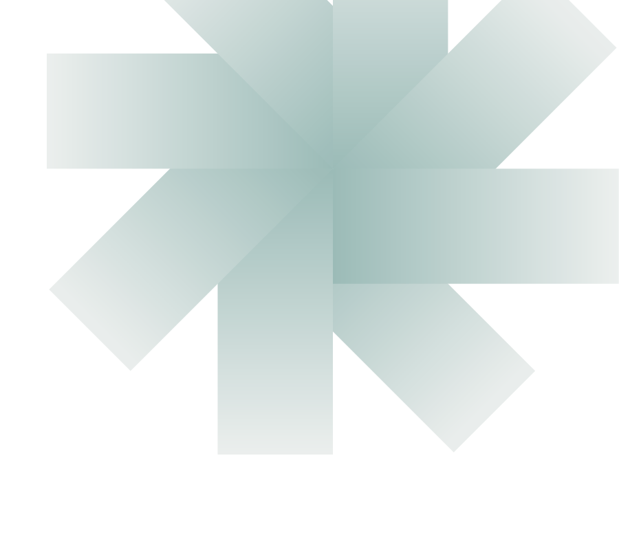

Objectif
Un achat validé par l'administrateur ouvre Internet pour la durée exacte, la facture PDF se télécharge, et l'accès se coupe seul.

Projet de stage réalisé en laboratoire VMware. Vendre un accès Internet au temps passé, en Wi-Fi comme sur câble : sans paiement validé, pas d'Internet.
Un achat validé par l'administrateur ouvre Internet pour la durée exacte, la facture PDF se télécharge, et l'accès se coupe seul.
Paiement simulé, données fictives, montants en FCFA entiers. Laboratoire de trois machines virtuelles, puis réseau filaire réel.
Intercepte. Pare-feu et routeur : il bloque tout utilisateur non authentifié et le redirige vers l'application.
Vend et facture. Comptes, forfaits, demandes de paiement simulées, validation et factures PDF.
Ouvre et coupe. Il connaît l'identifiant de chaque achat et sa date d'expiration.
Tout trafic http d'un client non authentifié est redirigé vers le portail.
Utilisateur identifié, forfait choisi, montant calculé en FCFA entier.
La demande de paiement simulé est acceptée par l'administrateur.
Identifiant technique aléatoire avec expiration, transmis à pfSense.
Critère : ping 8.8.8.8 depuis le client.
Critère : un code ouvre Internet, puis se coupe.
Critère : ssh et apt update fonctionnent.
Critère : radtest renvoie Access-Accept.
Critère : achat simulé, accès ouvert, facture PDF.
Critère : parcours complet sur le client.
Critère : validé, accès ouvert ; refusé, rien.
Critère : tableau de bord utilisable.
Critère : démonstration en filaire.
Redirigé vers l'application, aucun accès à Internet.
Un seul accès et une seule facture.
Accès coupé à l'heure exacte.
Refusé : un seul appareil par accès.
Désormais : arrêt par Halt, instantanés à chaque jalon, config.xml exporté.
Seconde carte réseau oubliée : ajoutée, puis interfaces réassignées.
Accès au serveur par SSH depuis Windows.
Perspective : API Mobile Money avec confirmation automatique.
Perspective : HTTPS avec nom de domaine et certificat.
Perspective : sauvegardes automatiques et reprise rapide.
Stagiaire : conception, installation, configuration, tests et documentation du système. À confirmer
À ajouter Dépôt GitHub, vidéo de démonstration.
Dossier de présentation et volume 2 de documentation technique. PDF à ajouter